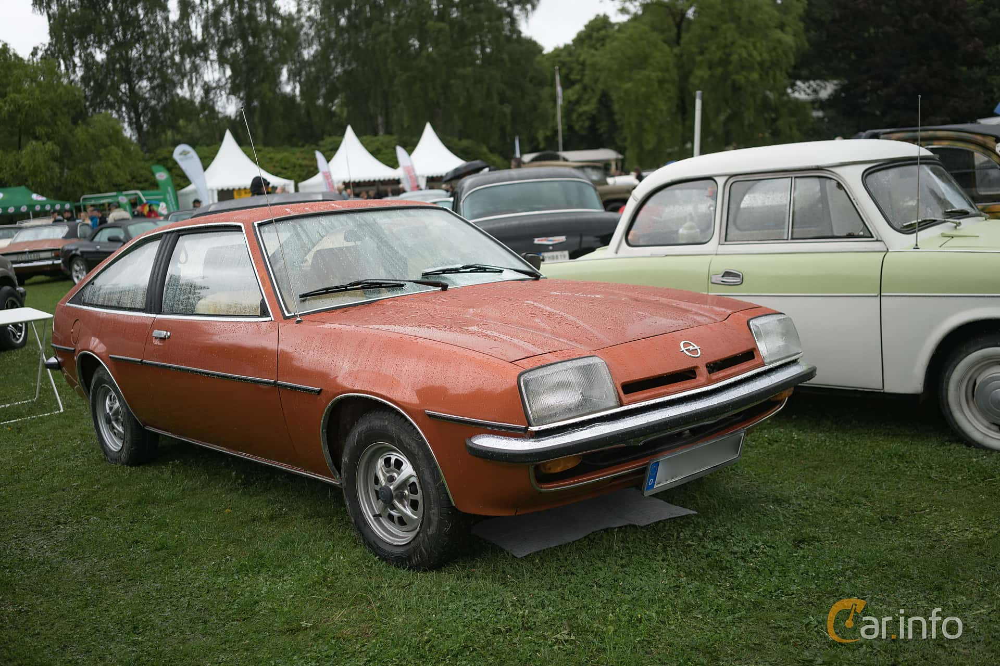
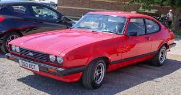

O Opel Manta é um coupé desportivo com tração traseira construído pelo fabricante alemão Opel em duas gerações de 1970 a 1988. O Manta era um coupé desportivo baseado no carro da família Ascona, semelhante ao Mustang Ford Falcon e suas varias cópias como o Ford Capri. O Manta manteve a tração traseira por ambas as gerações e também obteve sucesso nas competições.
 